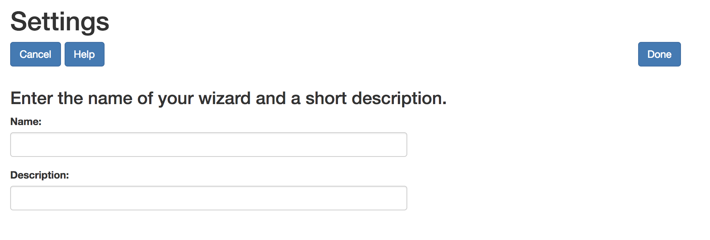

Presently there are only two setting for the wizard — setting the title and a short description of the wizard. Enter the title and description and select Done. You can return to this Settings page later from the All Steps page. Then you can change the title and the description at that time
When you select Done you will have the opportunity to create the first step of your wizard.
